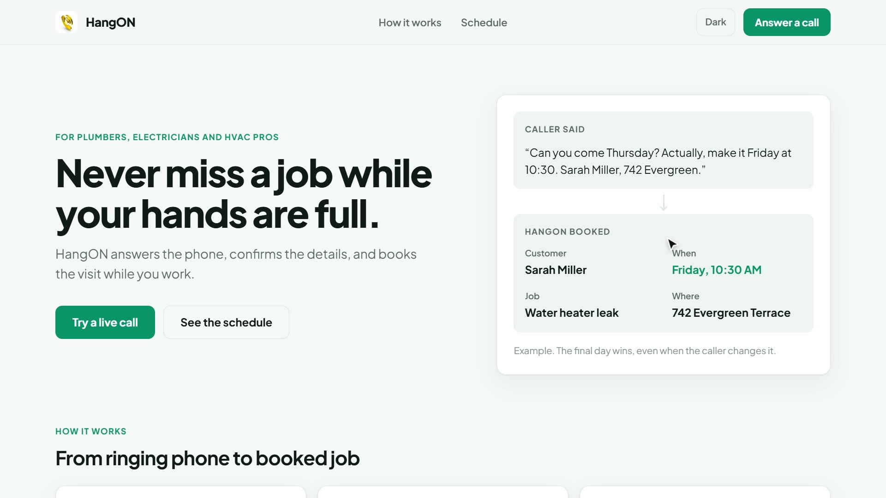

HangON
Your phone answers and books the job while your hands are full.
An AI front desk for solo plumbers, electricians and HVAC pros.

tryhangon.xyz · AssemblyAI Voice Agent Hackathon
Your phone answers and books the job while your hands are full.
An AI front desk for solo plumbers, electricians and HVAC pros.


Try a live call: tryhangon.xyz
github.com/Datwebguy/hangON